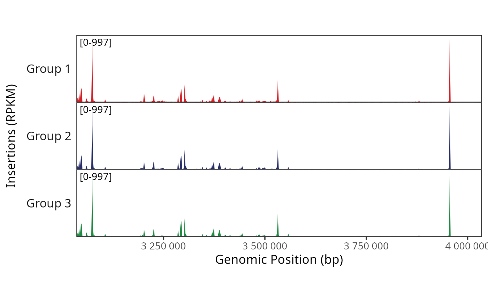

Plot a pseudobulk genome track, showing the number of fragment insertions across a region for each cell type or group.
Usage
trackplot_coverage(
fragments,
region,
groups,
cell_read_counts,
group_order = NULL,
bins = 500,
clip_quantile = 0.999,
colors = discrete_palette("stallion"),
legend_label = NULL,
zero_based_coords = !is(region, "GRanges"),
return_data = FALSE
)Arguments
- fragments
Fragments object
- region
Region to plot, e.g. output from
gene_region(). String of format "chr1:100-200", or list/data.frame/GRanges of length 1 specifying chr, start, end. Seehelp("genomic-ranges-like")for details- groups
Vector with one entry per cell, specifying the cell's group
- cell_read_counts
Numeric vector of read counts for each cell (used for normalization)
- group_order
Optional vector listing ordering of groups
- bins
Number of bins to plot across the region
- clip_quantile
(optional) Quantile of values for clipping y-axis limits. Default of 0.999 will crop out just the most extreme outliers across the region. NULL to disable clipping
- colors
Character vector of color values (optionally named by group)
- legend_label
![[Deprecated]](figures/lifecycle-deprecated.svg) Custom label to put on the legend (no longer used as color legend is not shown anymore)
Custom label to put on the legend (no longer used as color legend is not shown anymore)- zero_based_coords
Whether to convert the ranges from a 1-based end-inclusive coordinate system to a 0-based end-exclusive coordinate system. Defaults to true for GRanges and false for other formats (see this archived UCSC blogpost)
- return_data
If true, return data from just before plotting rather than a plot.
- scale_bar
Whether to include a scale bar in the top track (
TRUEorFALSE)
Value
Returns a combined plot of pseudobulk genome tracks. For compatability with
draw_trackplot_grid(), the extra attribute $patches$labels will be added to
specify the labels for each track. If return_data or return_plot_list is
TRUE, the return value will be modified accordingly.
Examples
frags <- get_demo_frags()
## Use genes and blacklist to determine proper number of reads per cell
genes <- read_gencode_transcripts(
file.path(tempdir(), "references"), release = "42",
annotation_set = "basic",
features = "transcript"
)
blacklist <- read_encode_blacklist(file.path(tempdir(), "references"), genome="hg38")
read_counts <- qc_scATAC(frags, genes, blacklist)$nFrags
region <- "chr4:3034877-4034877"
cell_types <- paste("Group", rep(1:3, length.out = length(cellNames(frags))))
BPCells:::render_plot_from_storage(
trackplot_coverage(frags, region, groups = cell_types, cell_read_counts = read_counts),
width = 6, height = 3
)
